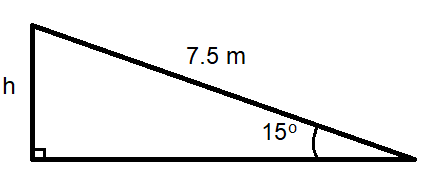

Vieriminen
Vieriminen#
Vierivä kappale etenee ja pyörii yhtä aikaa. Sen liike-energia koostuu etenemisen liike-energiasta ja pyörimisen liike-energiasta. Vierivän kappaleen liike-energia on siis suurempi kuin esimerkiksi liukuvan kappaleen. Energian määrä on
\(E_k=\frac{1}{2} mv^2+\frac{1}{2} J\omega^2\)
Yhtälössä esiintyvää kulmataajuutta \(\omega\) ei yleensä tarvitse tietää, koska sen paikalle voidaan ympyräliikkeen laskukaavojen perusteella sijoittaa \(\omega=\frac{v}{r}\). Tällöin edellinen kaava muuttuu muotoon
\(E_k=\frac{1}{2} mv^2+\frac{1}{2} J\frac{v^2}{r^2}\)
Koska hitausmomentin \(J\) laskukaavat sisältävät yleensä säteen \(r\) toisen potenssin, niin käytännössä se aina supistuu pois, eikä näin ollen kappaleen koolla ole vaikutusta sen vierimiseen liittyvän energiaan. Massa sen sijaan vaikuttaa, ja lisäksi kappaleen muodosta hitausmomenttiin tulee jokin murtolukukerroin.
Esimerkki
Laske jalkapallon kokonaisenergia, kun sen massa on 500 g ja se etenee vierien nopeudella 3 m/s.
Ratkaisu
Sijoitetaan kokonaisenergian kaavaan \(E_k=\frac{1}{2} mv^2+\frac{1}{2} J\frac{v^2}{r^2}\) onton pallon hitausmomentti \(J=\frac{2}{3}mr^2\). Tällöin kokonaisenergiaksi muodostuu
\(E_k=\frac{1}{2} mv^2+\frac{1}{2} \cdot \frac{2}{3} m r^2 \frac{v^2}{r^2}\)
joka sievenee muotoon \(E_k=\frac{1}{2} mv^2+\frac{1}{3} mv^2\)
ja edelleen \(E_k=\frac{5}{6} mv^2 = \frac{5}{6}\cdot 0.5~\text{kg}\cdot \left(3~\frac{\text{m}}{\text{s}}\right)^2=4.5~\text{J}\).
Mekaanisen energian säilymislaki toimii myös vieriville kappaleille, kun huomioidaan potentiaali- ja liike-energian lisäksi vierimisenergia. Tällöinkin voi tapahtua samalla tapalla kuin putoamisen tai liukumisen tapauksessa: kappaleen massa supistuu pois. Niinpä ei periaatteessa ole merkitystä, onko mäkeä pitkin alas vierimässä talouspaperirulla vai vesitynnyri. Niiden pitäisi saavuttaa sama loppunopeus. Sen sijaan kappaleen muodolla on kyllä merkitystä asialle.
Esimerkki
Selvitä energiaperiaatteen avulla, mikä on umpinaisen pallon (\(J=\frac{2}{5} mr^2\)) nopeus mäen alla, kun se vierii alas mäeltä, jonka korkeus on 4 m.
Ratkaisu
Mekaanisen energian säilymislaki: \(mgh=\frac{1}{2} mv^2+\frac{1}{2} J\omega^2\)
Sijoitetaan hitausmomentti ja ilmaistaan kulmataajuus muodossa \(\omega=\frac{v}{r}\):
\(mgh=\frac{1}{2} mv^2+\frac{1}{2}\cdot \frac{2}{5} mr^2 \cdot \frac{v^2}{r^2}\)
Sievennetään: \(mgh=\frac{1}{2} mv^2+\frac{1}{5} mv^2\) eli \(mgh=\frac{7}{10} mv^2\)
Jaetaan molemmat puolet massalla: \(gh=\frac{7}{10} v^2\)
Ratkaistaan nopeus: \(v=\sqrt{\frac{gh}{\frac{7}{10}}} = \sqrt{gh\cdot \frac{10}{7}}\)
Sijoitetaan luvut: \(v=\sqrt{9.81~\frac{\text{m}}{\text{s}^2}\cdot 4~\text{m}\cdot \frac{10}{7}} = 7.5~\frac{\text{m}}{\text{s}}\)
Esimerkki
Umpinainen sylinteri, jonka säde on 25 cm, vierii mäkeä, jonka kaltevuuskulma on \(15^{\circ}\). Laske sylinterin nopeus, kun se on vierinyt mäkeä pitkin mitattuna 7.5 m.

Ratkaisu
Mekaanisen energian säilymislaki: \(mgh=\frac{1}{2} mv^2+\frac{1}{2} J\omega^2\)
Sijoitetaan hitausmomentti \(J=\frac{1}{2} mr^2\) ja ilmaistaan kulmataajuus muodossa \(\omega=\frac{v}{r}\):
\(mgh=\frac{1}{2} mv^2+\frac{1}{2}\cdot \frac{1}{2} mr^2 \cdot \frac{v^2}{r^2}\)
Sievennetään: \(gh=\frac{1}{2}v^2+\frac{1}{4} v^2\) eli \(gh=\frac{3}{4} v^2\)
Ratkaistaan nopeus: \(v=\sqrt{\frac{4}{3} gh}\)
Lasketaan vierimismatkan perusteella lähtökorkeus: \(h=7.5~\text{m}\cdot \sin{15^{\circ}}\)
Loppunopeus on siis \(v=\sqrt{\frac{4}{3} \cdot 9.81~\frac{\text{m}}{\text{s}^2}\cdot 7.5~\text{m}\cdot \sin{15^{\circ}}} = 5.0 ~\frac{\text{m}}{\text{s}}\).